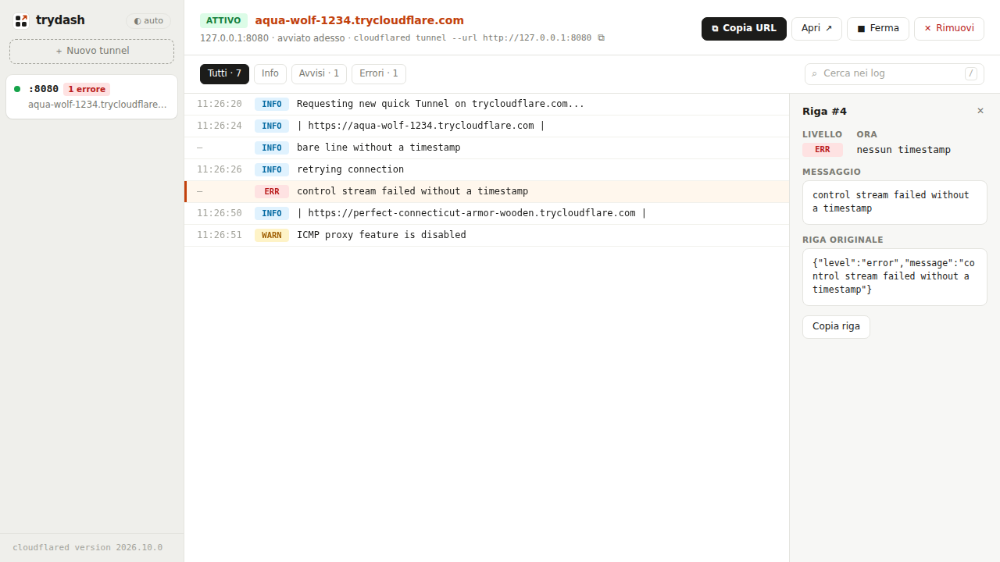

Più tunnel insieme
Ognuno con stato, URL e numero di errori. Per crearne uno basta scrivere la porta: 3000 diventa http://127.0.0.1:3000.
Software libero · GPL-3.0
Esponi un servizio di sviluppo con un clic, tieni d’occhio tutti i tunnel e leggi i loro log in un posto solo.
Un unico eseguibile per Linux, macOS e Windows: niente da installare oltre a cloudflared.
Eseguibili per 5 sistemi, verificabili con SHA256SUMS.
Animazione: si avvia trydash dal terminale, si scrive la porta 3000 e si preme Crea; il tunnel parte, riceve un URL pubblico da copiare e mostra log e traffico.
cloudflared tunnel --url http://localhost:3000 è comodissimo, ma con due o tre servizi aperti ti ritrovi
con più terminali da tenere d’occhio, URL da ricopiare e log difficili da leggere.
trydash avvia e gestisce i quick tunnel al posto tuo.
Ognuno con stato, URL e numero di errori. Per crearne uno basta scrivere la porta: 3000 diventa http://127.0.0.1:3000.
Livelli colorati, filtri, ricerca con evidenziazione, scorrimento continuo e modalità “segui la coda”.
Limita il tunnel a indirizzi precisi o a interi domini (*@azienda.it). Va bene anche un elenco incollato da Outlook.
Richieste in corso rispetto al limite di 200, totali, errori, connessioni e un grafico degli ultimi 5 minuti.
Host header, TLS non verificato per i certificati self-signed, origine HTTP/2. L’anteprima mostra il comando cloudflared equivalente.
Ti avvisa se la tua origine non risponde, se ti avvicini al limite di richieste e quando un riavvio cambierà l’URL.

E poi: prova con Hello World senza un server locale, tunnel fermati ancora consultabili, tema chiaro e scuro, layout per mobile, scorciatoie da tastiera.
cloudflaredDeve essere nel PATH. Segui la guida di Cloudflare; se manca, trydash ti mostra i comandi per il tuo sistema.
| Sistema | File |
|---|---|
| Linux x64 | trydash-1.0.0-linux-x64 |
| Linux ARM64 | trydash-1.0.0-linux-arm64 |
| macOS Apple Silicon | trydash-1.0.0-darwin-arm64 |
| macOS Intel | trydash-1.0.0-darwin-x64 |
| Windows x64 | trydash-1.0.0-windows-x64.exe |
Controlla il file con SHA256SUMS: sha256sum -c SHA256SUMS --ignore-missing
chmod +x trydash-*-linux-x64 # Linux e macOS
./trydash-*-linux-x64Apri l’indirizzo stampato, di solito http://127.0.0.1:8787, scrivi la porta del tuo servizio e premi Crea. Su Windows basta avviare il file .exe.
I binari non sono firmati. Su macOS togli il blocco di Gatekeeper con xattr -d com.apple.quarantine trydash-*; su Windows, se compare SmartScreen, scegli “Ulteriori informazioni” e poi “Esegui comunque”.
Preferisci partire dai sorgenti? Serve Bun ≥ 1.1: git clone https://github.com/mikzero/trydash.git && cd trydash && bun start.
*.trycloudflare.com è casuale e cambia a ogni avvio;429;127.0.0.1;